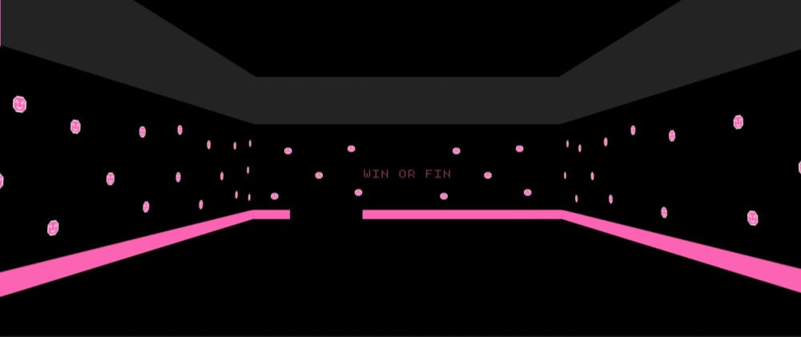
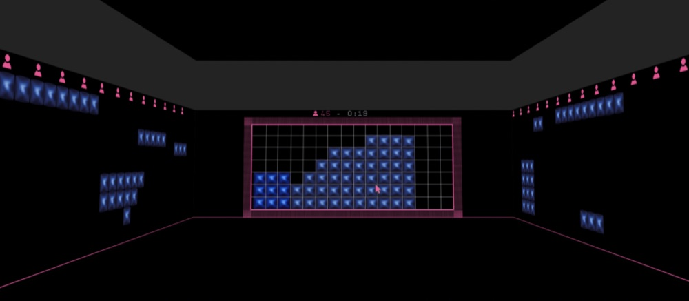
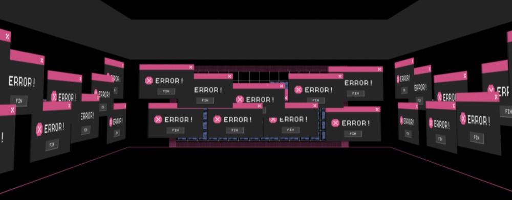
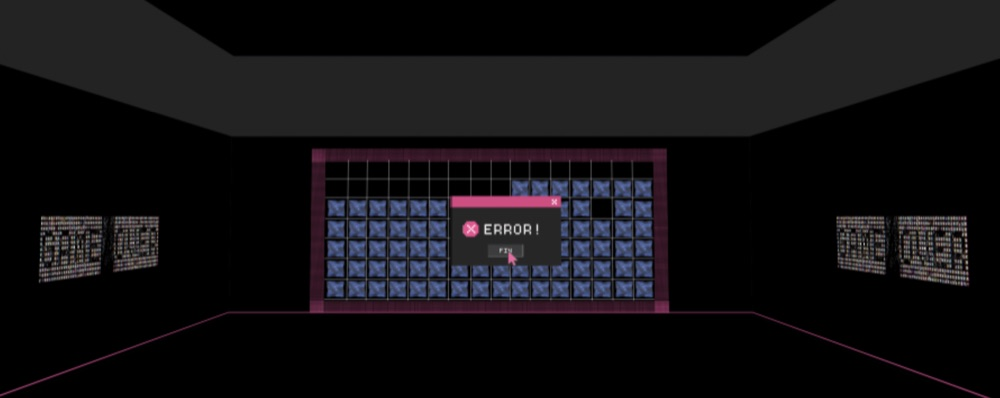
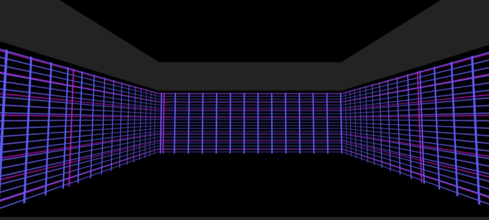
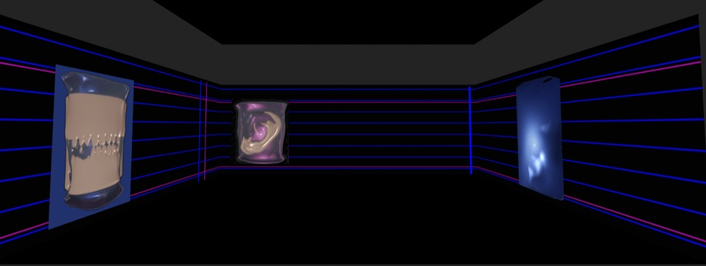

Diseño inmersivo
El diseño inmersivo se enfoca en crear experiencias sensoriales que involucran a las personas más allá de la pantalla, combinando espacio, sonido, imagen e interacción. Diseño entornos que invitan a explorar y a conectar emocionalmente, usando la narrativa y la atmósfera para disolver los límites entre lo físico y lo digital.
WIN OR FIN - Experiencia inmersiva
Rol: Diseño inmersivo - concepto - espacio -visuales - sonido
Formato: Experiencia interactiva audiovisual
Contexto general
WIN OR FIN es una experiencia inmersiva interactiva que explora la tensión, la ansiedad y la pérdida de control a través de la lógica de un videojuego. El proyecto propone un espacio digital en el que el usuario puede participar activamente o adoptar un rol de observador, enfrentándose a un sistema que gradualmente se vuelve caótico e impredecible.
Idea conceptual
Inspirado en la estética de los videojuegos de los años 2000 y en dinámicas actuales de validación social, el proyecto reflexiona sobre cómo la presión por “ganar”, decidir rápido y ser observado afecta el equilibrio emocional. A medida que avanza el juego, la experiencia deja de ser lúdica y comienza a generar incomodidad, saturación visual y sonora, transformándose en un entorno de tensión constante.
Experiencia inmersiva
La experiencia se construye en tres momentos —inicio, desarrollo y caos— donde el espacio, el sonido y la interacción evolucionan en simultáneo. La grilla del juego se llena progresivamente, los colores se intensifican, el sonido se vuelve más denso y el sistema comienza a fallar, provocando una sensación de encierro y pérdida de control que culmina en un colapso visual y narrativo.
Línea de tiempo






WIN OR FIN no busca que el usuario gane, sino que experimente. El proyecto propone una reflexión sobre los límites entre juego, control y ansiedad en entornos digitales contemporáneos, utilizando el diseño inmersivo como medio para generar una vivencia emocional antes que una respuesta racional.
Desde el diseño inmersivo, el proyecto articula espacio, interfaz, animación y sonido como un sistema narrativo. Cada decisión visual y sonora está pensada para acompañar el estado emocional del usuario, utilizando la estética digital, la repetición y el error como recursos expresivos más que funcionales.